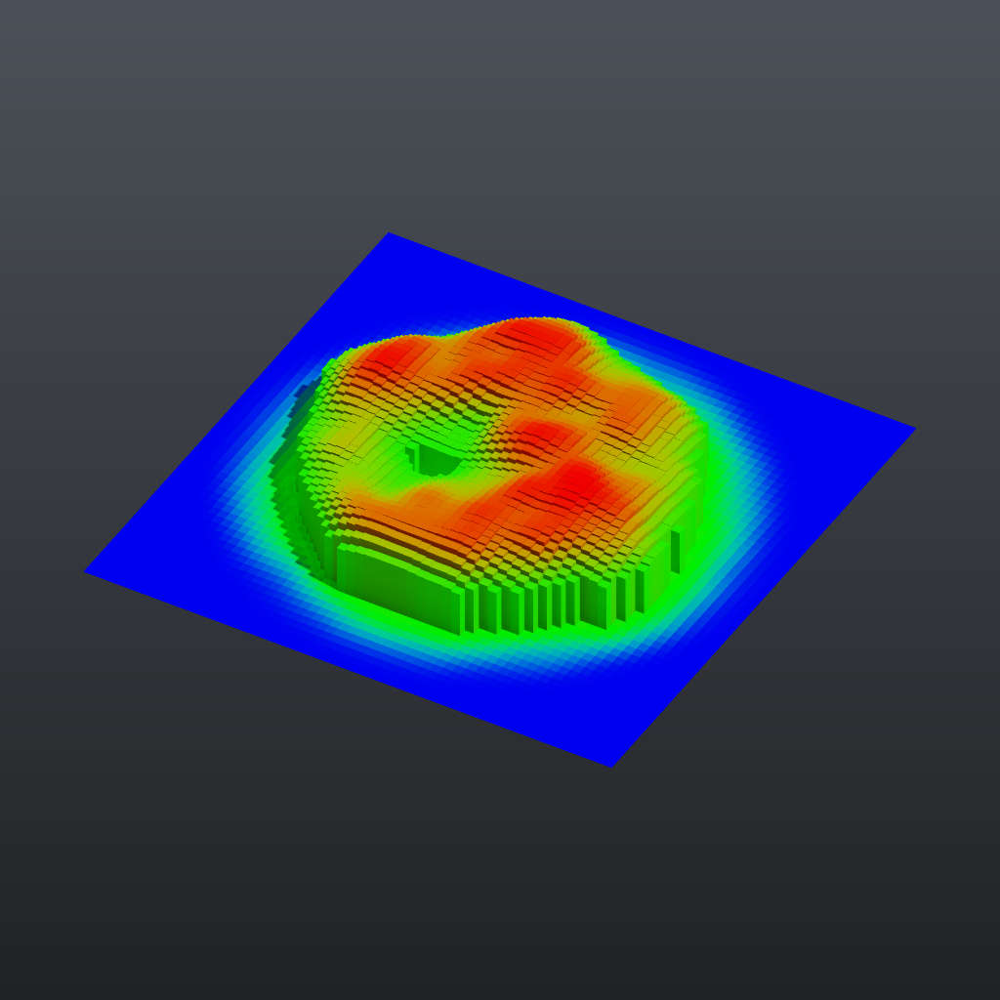

Tutorial 3: attributes and wrangle#
Attributes are named values stored per point, per primitive, per vertex or once per geometry (detail). This tutorial creates two point attributes, edits one with a Wrangle expression, moves it from points to faces, colours by it, and turns a comparison on it into a group that drives an extrusion.

Load it#
Drag example_workflows/tutorial_03_attributes_wrangle.json onto the ComfyUI canvas and press Queue. No model files or other custom nodes are needed.
Step by step#
- Grid (PCG) makes a flat 12 x 12 grid with 61 x 61 points.
- Attribute Create (PCG) ("dist = length(@P)") creates the float point attribute
dist. Use Expression is on, so the value comes from the expressionlength(@P): the distance of each point from the origin. - Attribute Noise (PCG) ("height = noise") writes noise into a new attribute instead of moving the points: Attribute Names is
height, the type isfloatand the range iszero_to_one, so every point gets a value between 0 and 1. - Wrangle (PCG) ("Fade towards the edge") runs one line of code over all points at once:
@height = @height * (1 - smoothstep(3.0, 6.0, @dist))@namereads or writes an attribute; the code is Python syntax evaluated on whole numpy arrays, so there is no per-point loop. Points further than 6 from the centre end up with height 0. - Attribute Promote (PCG) ("height: points to faces") averages
heightfrom the points of each face into a primitive attribute (and, with the default Delete Original, removes the point version). The next two nodes work on faces. - Group Create (PCG) ("Group 'tall'") uses the base pattern
@height > 0.35to put the matching faces into the primitive grouptall. Any Group field in the plugin accepts this kind of@attributecomparison. - PolyExtrude (PCG) ("Raise 'tall' by its height") extrudes only the group
tall, each face separately (individual). Local Attributes is on with Distance Scaleheight, so each face moves by distance 3 times its own height. - Color (PCG) ("Colour by height") uses the mode Ramp from Attribute on the primitive attribute
height. The range is computed automatically and mapped through the default blue-green-red ramp. - Geometry Preview (PCG) (Studio look) and Viewport (PCG) show the result.
Worth tweaking#
| Node | Parameter | Effect |
|---|---|---|
| Group 'tall' | base | Try @height > 0.6, or @height > 0.35 & @height < 0.5, to change which faces rise. |
| height = noise | element_size_*, rand_seed, noise_type | Size and layout of the noise blobs. |
| Fade towards the edge | code | Change the fade radii, or add a second line such as @height = @height ** 2 for sharper peaks. |
| Raise 'tall' by its height | distance | Multiplier for the attribute; inset adds a gap between neighbouring columns. |
| Colour by height | ramp, auto_range | Your own colour ramp, or a fixed input range. |
To see the attribute values at any step, wire that node into a Geometry Spreadsheet (PCG) node: it shows the point, primitive, vertex and detail attributes in tables on the node.
See also#
- Geometry concepts: attribute classes and types.
- Expressions: the Wrangle language and its functions.
- Groups:
@attributecomparisons and other group patterns. - Next: Tutorial 4: for-each variations.